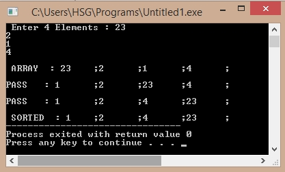

/*C Program for RadixSort*/
#include<stdio.h>
#include<conio.h>
#define MAX 20
#define S
void Display(int *a, int n)
{
int i;
for (i = 0; i < n; i++)
printf("%d\t;", a[i]);
}
void radix_sort(int *a, int n)
{
int i, b[MAX], m = 0, exp = 1;
for (i = 0; i < n; i++)
{
if (a[i] > m)
m = a[i];
}
while (m / exp > 0)
{
int box[10] = { 0 };
for (i = 0; i < n; i++)
box[a[i] / exp % 10]++;
for (i = 1; i < 10; i++)
box[i] += box[i - 1];
for (i = n - 1; i >= 0; i--)
b[--box[a[i] / exp % 10]] = a[i];
for (i = 0; i < n; i++)
a[i] = b[i];
exp *= 10;
#ifdef S
printf("\n\nPASS : ");
Display(a, n);
#endif
}
}
int main()
{
int arr[MAX];
int i, num;
printf("\nEnter no of elements : ", MAX);
scanf("%d", &num);
printf("\n Enter %d Elements : ", num);
for (i = 0; i < num; i++)
scanf("%d", &arr[i]);
printf("\n ARRAY : ");
Display(&arr[0], num);
radix_sort(&arr[0], num);
printf("\n\n SORTED : ");
Display(&arr[0], num);
return 0;
}
Output:
